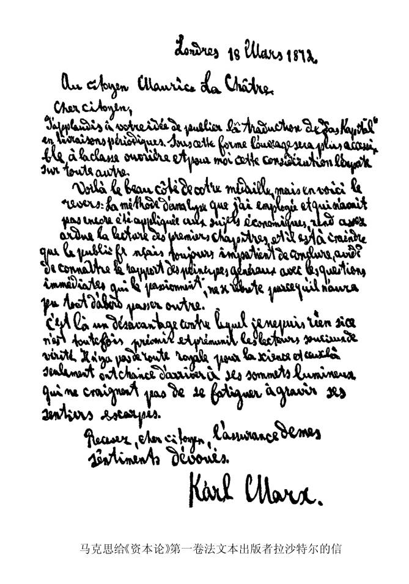

法文版序言和跋
致莫里斯·拉沙特尔公民
亲爱的公民：
您想定期分册出版《资本论》的译本，我很赞同。这本书这样出版，更容易到达工人阶级的手里，在我看来，这种考虑是最为重要的。
这是您的想法好的一面，但也有坏的一面：我所使用的分析方法至今还没有人在经济问题上运用过，这就使前几章读起来相当困难。法国人总是急于追求结论，渴望知道一般原则同他们直接关心的问题的联系，因此我很担心，他们会因为一开始就不能继续读下去而气馁。
这是一种不利，对此我没有别的办法，只有事先向追求真理的读者指出这一点，并提醒他们。在科学上没有平坦的大道，只有不畏劳苦沿着陡峭山路攀登的人，才有希望达到光辉的顶点。
亲爱的公民，请接受我对您的忠诚。
卡尔·马克思
1872年3月18日于伦敦
致读者

约·鲁瓦先生保证尽可能准确地、甚至逐字逐句地进行翻译。他非常认真地完成了自己的任务。但正由于他那样认真，我不得不对表述方法作些修改，使读者更容易理解。因为本书分册出版，这些修改是逐日作的，所以不能处处一样仔细，文体不免有不一致的地方。
在担负校正工作后，我就感到作为依据的原本（德文第二版）应当作一些修改，有些论述要简化，另一些要加以完善，一些补充的历史材料或统计材料要加进去，一些批判性评注要增加，等等。不管这个法文版本有怎样的文字上的缺点，它仍然在原本之外有独立的科学价值，甚至对懂德语的读者也有参考价值。
下面是我从德文第二版跋中摘引的几段，是有关政治经济学在德国的发展和本书运用的方法的。
卡尔·马克思
1875年4月28日于伦敦